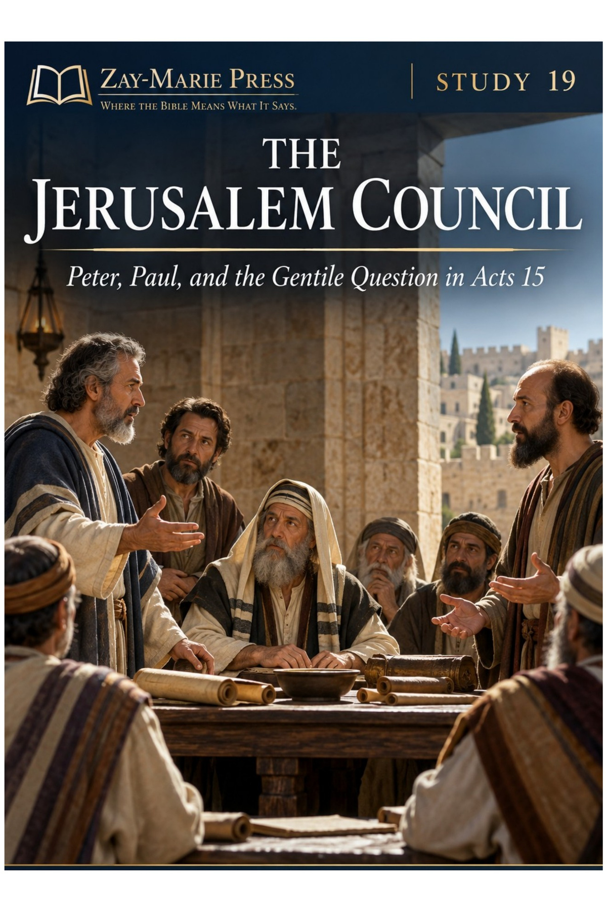
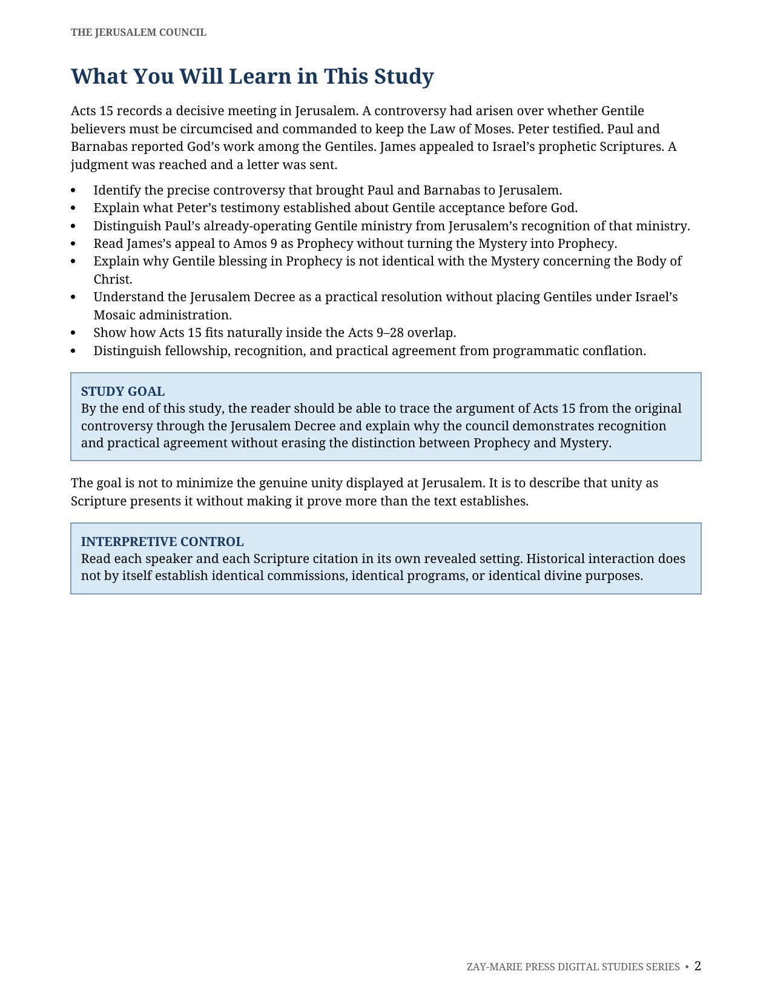
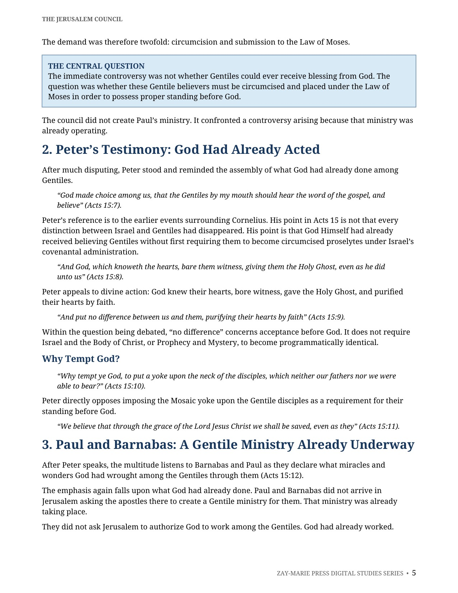
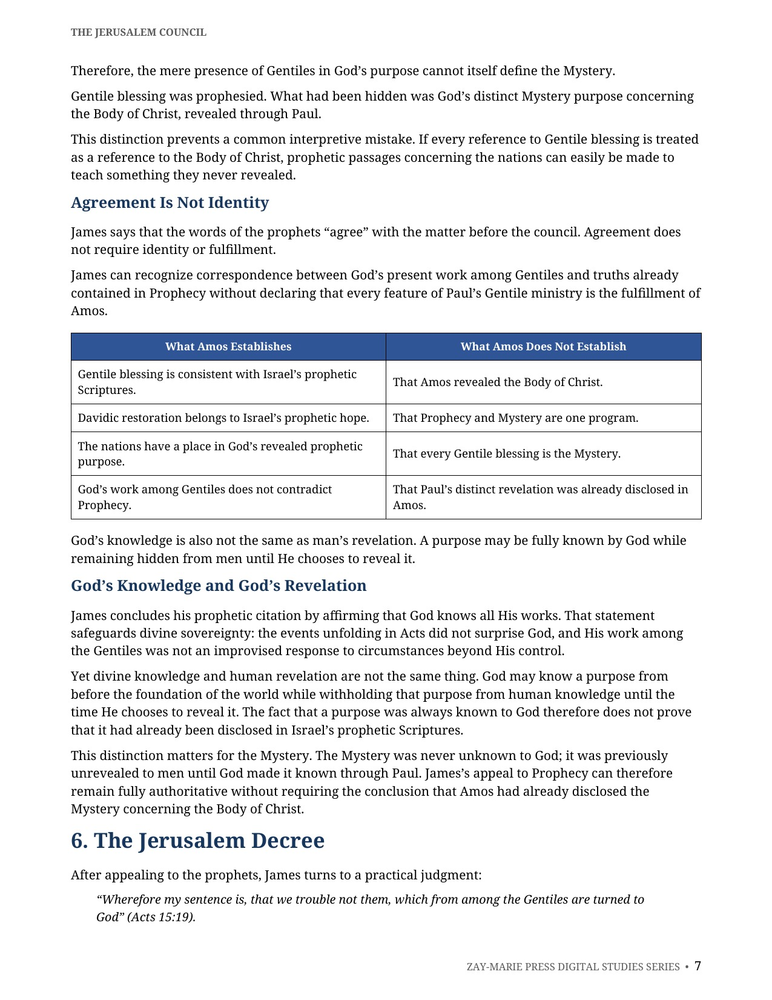
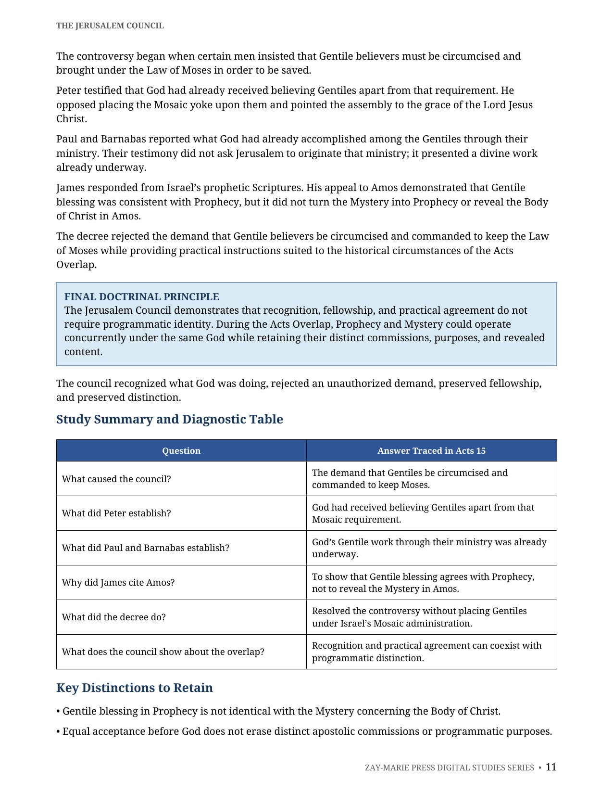

The Jerusalem Council
Fellowship and Distinction During the Acts Overlap
A Biblical Study of Acts 15, the Jerusalem Decree, and Recognition Without Absorption
Acts 15 records a decisive meeting over whether Gentile believers must be circumcised and commanded to keep the Law of Moses. Peter testified, Paul and Barnabas reported God’s work among the Gentiles, James appealed to Israel’s prophetic Scriptures, and a judgment was sent in writing.
This study examines the council’s testimony, decree, and historical setting. It shows how recognition, fellowship, and practical agreement operate during Acts 9–28 while Prophecy and Mystery remain distinct.
What Did the Jerusalem Council Recognize and Resolve?
Acts 15 did not create Paul’s Gentile ministry or make Jerusalem the source of his apostleship. The council faced a concrete controversy: whether Gentile believers had to be circumcised and placed under Israel’s Mosaic administration in order to stand properly before God.
The resulting decision preserves genuine fellowship and rejects the disputed Mosaic requirement without collapsing the ministries present at the meeting. James’s use of Amos shows that Gentile blessing agrees with Prophecy; it does not make the Mystery concerning the Body of Christ a truth already revealed in Prophecy.
Follow Acts 15 in Its Historical Setting
The Circumcision and Law Controversy
Identify the precise demand that brought Paul and Barnabas to Jerusalem and why it required an answer.
Peter’s Testimony
Trace what Peter established about God’s acceptance of Gentiles apart from the Mosaic yoke.
Paul and Barnabas’s Ministry
See why their report presents a Gentile ministry already underway rather than one created by Jerusalem.
James, Amos 9, and Prophecy
Read James’s appeal in its prophetic setting without making the Mystery the fulfillment of Amos.
The Jerusalem Decree
Understand the practical instructions given to Gentile believers without treating them as Israel’s Mosaic administration.
Recognition Without Absorption
Learn how fellowship and practical agreement can remain genuine while distinct ministries retain their revealed purposes.
Examine the Council Texts for Yourself
Acts 15:1–5
Circumcision and Law keeping are presented as requirements for salvation. The passage defines the actual controversy brought before the council.
Acts 15:7–12
Peter testifies that God had already received believing Gentiles. Paul and Barnabas then report God’s work among the Gentiles through their ministry.
Acts 15:13–18
James appeals to the prophets and Amos 9 to show that Gentile blessing is consistent with Prophecy. The citation remains within Israel’s prophetic setting.
Acts 15:19–29
The decree refuses to place Gentiles under circumcision and the Law of Moses. Practical restrictions are given for the circumstances then present.
Acts 10:1–48
Peter’s earlier experience with Cornelius explains the divine action he recalls at the council. It establishes Gentile acceptance without requiring proselyte status.
Amos 9:11–15
Amos speaks of Davidic restoration and the nations in relation to Israel’s promised future. It does not disclose the Mystery concerning the Body of Christ.
Galatians 2:6–9
Paul describes recognition of distinct spheres of ministry. Fellowship does not make his apostleship an extension of the Twelve.
Ephesians 3:1–9
Paul explains the Mystery revealed through him concerning the Body of Christ. Its revealed content remains distinct from the prophetic passage James cites.
Recognition and Practical Agreement
“The council did not create Paul’s ministry. It confronted a controversy arising because that ministry was already operating.”
Acts 15 locates Peter, James, Paul, and Barnabas in the same historical period, addressing a real dispute. Their interaction, testimony, and practical judgment demonstrate that concurrence does not require their ministries to become identical.
Preview the Study Before You Purchase
Click any page to enlarge it for reading.
{kind=link}

What You Will Learn in This Study
Begin with the governing questions, controls, and distinctions that guide the study of Acts 15.
{kind=link}

Peter’s Testimony and Paul’s Ministry
Trace the divine work already acknowledged at Jerusalem and the distinct ministries represented there.
{kind=link}

The Jerusalem Decree
Examine the practical judgment that rejects circumcision and Mosaic Law keeping for Gentile believers.
{kind=link}

Study Summary and Diagnostic Table
Review the questions answered in Acts 15 and the distinctions needed to read the council carefully.
A Focused Study Built for
Understanding and Teaching
13-Page Biblical Study
A focused study of Acts 15, its controversy, testimony, decree, and historical setting.
Six Core Teaching Sections
Follow the council from the original dispute through its doctrinal and practical resolution.
Amos 9 Comparison
Distinguish Gentile blessing in Prophecy from the Mystery revealed through Paul.
Acts 15 Teaching Table
Use the study’s movement-and-conclusion table to trace each part of the council.
Study Summary
Review the central conclusions concerning the council, the decree, and the Acts Overlap.
Key Distinctions
Retain the differences between prophetic Gentile blessing, the Mystery, and Mosaic administration.
Scripture-Tracing Exercise
Work through Acts 15, Amos 9, Galatians 2, and related passages directly from Scripture.
Teaching and Discussion Tools
Use the teaching outline, review questions, and guided further study for personal or group study.
The Jerusalem Council
13-page digital PDF · For personal use